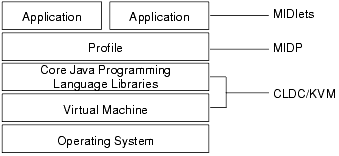
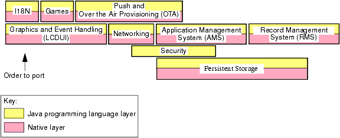

Chapter 1
Introduction
The Mobile Information Device Profile (MIDP) is a set of APIs (a profile) for the Java™ 2 Platform, Micro Edition (J2ME™). It is for small, resource-constrained devices such as mobile phones and personal organizers.
This product, MIDP Reference Implementation 2.0 FCS, complies with the MIDP 2.0 Specification produced by the Mobile Information Device Profile 2.0 [JSR-000118] available at
http://jcp.org/jsr/detail/118.jsp.
MIDP Reference Implementation 2.0 FCS runs a device emulator on the Microsoft Windows 2000 platform. It has also been run on the Solaris™ 8 Operating Environment (Solaris OE) and RedHat Linux 7.2, although these are not supported platforms.
MIDP applications are called MIDlets. One or more MIDlets packaged together for installation onto a device is called a MIDlet suite.
This chapter introduces MIDP porting. It contains the sections:
1.1 Product Architecture
MIDP works with the Connected Limited Device Configuration (CLDC) of the J2ME platform. The following figure shows the J2ME architecture from the perspective of MIDP:
[D]
FIGURE 1 – J2ME Architecture with MIDP and MIDP Applications
MIDP itself is made up of modules, many of which are implemented in two layers:
- Java programming language layer
(This part typically can run without changes on a new device.)
- Native layer, implemented in the C programming language
(This part typically needs to be changed so that it can run on a new device.)
The following figure shows the modules that comprise MIDP Reference Implementation. A module shown atop and overlapping another module uses code from that other module. (In some cases, the upper module might use only the native layer of another module.)
[D]
FIGURE 2 – MIDP 2.0 Modules
The chapters in this guide are organized in a way similar to the modules shown in the previous figure: they start with a module at the bottom of the stack, then work upwards. If you work in this order, you will always be ready to test a ported module because the layers underneath it will ready.
The modules are:
- Event Handling — Receives and processes events from the virtual machine and from MIDP. Events include key presses, requests for screen changes, and so on.
See Chapter 3, “The Event Model” for more information.
- Record Management System (RMS) — Provides a platform-independent interface to MIDlets that need to store data on the device.
See Chapter 4, “Persistent Storage” for detailed porting information.
- Graphics — Provides high-level graphical components, such as text boxes and forms, and a low-level component that includes graphics primitives such as lines and arcs.
See Chapter 5, “Thread-Safety in LCDUI” and Chapter 6, “LCDUI Graphical User Interface,” for detailed porting information.
- Security — Provides a policy that protects security-sensitive APIs by requiring permission to use them. It sets up a notion of trusted and untrusted MIDlet suites; these MIDlets typically have different sets of permissions.
See Chapter 7, “Security” for more information.
- Networking — Provides the following communication protocols:
- HTTP
- HTTPS
- Sockets
- Server sockets
- Datagram
- Comm
See Chapter 8, “Networking” for more information.
- Application Management System (AMS) — Installs, updates, and lists MIDlets on the device, removes MIDlets from the device, and manages the life cycles of the MIDlets on the device.
See Chapter 9, “The Application Management System” for detailed porting information.
- Over the Air Provisioning (OTA) — Enables users to discover MIDlet suites on a network, download them using HTTP 1.1 or another protocol that implements the HTTP 1.1 functionality, and install or update them on their device.
See Chapter 9, “The Application Management System” for detailed porting information.
- Push — Enables a MIDlet to be launched in order to accept data from a server at the server’s request. When server data arrives, the user can accept or reject it. If the user accepts, the AMS exits any currently running MIDlet and launches the MIDlet that will receive the data.
See Chapter 10, “Push Functionality” for more information.
- Games — Extends the low-level graphics component to provide game-specific capabilities such as an off-screen graphics buffer and the ability to query key status. This functionality can be the basis for the user interface of an action-style game.
See Chapter 6, “LCDUI Graphical User Interface” for detailed porting information.
- I18N — Contains the input method handlers and resource message strings that provide a localized LCDUI interface. This porting guide does not cover I18N.
In addition, the MIDP Reference Implementation contains an optional module, the audio building block. The audio building block makes it possible to play single tones, tone sequences, and, optionally, synthetic audio such as WAV files. See Chapter 11, “Porting the Audio Building Block” for detailed porting information.
1.2 Porting Requirements
MIDP Reference Implementation 2.0 FCS can be ported to platforms that both meet the device requirements in the MIDP 2.0 Specification and have an ANSI C compiler. When you have completed your port, it must meet certain requirements to be compliant with the MIDP 2.0 specification. This section discusses these porting requirements in the topics:
1.2.1 Hardware Requirements
The minimum hardware requirements for a device are:
- Display –
- Screen-size: 96x54 pixels
- Display depth: 1-bit
- Pixel shape (aspect ratio): approximately 1:1
- One or more of the following user-input mechanisms –
- One-handed keyboard
- Two-handed keyboard
- Touch screen
- Memory –
- 256 kilobytes of non-volatile memory for the MIDP implementation, beyond what's required for CLDC.
- 8 kilobytes of non-volatile memory for application-created persistent data
- 128 kilobytes of volatile memory for the Java runtime
- Networking – Two-way, wireless, possibly intermittent, with limited bandwidth
- Sound – The ability to play tones, either with dedicated hardware or a software algorithm.
1.2.2 Software Requirements
The software requirements for a device are:
- A minimal kernel to manage the underlying hardware. It must:
- Handle interrupts, exceptions, and minimal scheduling.
- Provide at least one schedulable entity to run the virtual machine for the Java platform (JVM™).
The kernel does not need to support separate address spaces (or processes) or make any guarantees about either real-time scheduling or latency behavior.
- A mechanism to read and write from non-volatile memory.
- Read and write access to the device's wireless networking.
- A mechanism to access the current date and the current time in milliseconds.
- Ability to write to a bit-mapped graphics display.
- A way to capture user input from one (or more) of the three user-input mechanisms previously listed.
- A way to manage the application life-cycle of the device.
Examples of MIDs include, but are not restricted to, cellular phones, two-way pagers, and wireless-enabled personal digital assistants (PDAs).
1.2.3 Compiler Requirements
The compiler must give users a way to indicate additional directories to be searched for included files. It must also define the basic types shown in the table below.
TABLE 1 – Required Types in the C Programming Language
|
Type
|
Size
|
Semantics
|
|
char
|
8 bits
|
Signed or unsigned
|
|
signed char
|
8 bits
|
Signed
|
|
unsigned char
|
8 bits
|
Unsigned
|
|
short
|
16 bits
|
Signed
|
|
unsigned short
|
16 bits
|
Unsigned
|
|
int
|
32 bits
|
Signed
|
|
unsigned int
|
32 bits
|
Unsigned
|
|
long
|
32 bits
|
Signed
|
|
unsigned long
|
32 bits
|
Unsigned
|
|
void *
|
32 bits
|
Pointer
|
|
The compiler should, but is not required to, support 64-bit integers. (64-bit integer arithmetic is the only non-ANSI characteristic of the source code.)
MIDP Reference Implementation has been compiled with the following compilers:
- Sun Microsystems Inc. C Compiler 5.0 and 5.2 on the Solaris OE
- GNU C 2.95.2 compiler on the Solaris OE and Windows 2000, as well as 2.95.3 and 3.03 on Linux. For more information, see
http://www.gnu.org.
- Microsoft Visual C++ 6.0 Professional on Windows 2000.
The MIDP Reference Implementation has been tested on only machines that have 32-bit pointers and ints, and do not require far pointers.
When you port the MIDP Reference Implementation 2.0 FCS to a new device, you must ensure that there is a CLDC/KVM 1.0.4 implementation available for it. See the KVM Porting Guide for KVM porting instructions if an implementation is not already available.
1.2.4 Requirements of the Completed Port
For a port to be certified as compliant with the MIDP 2.0 Specification, it must pass the tests in the MIDP Reference Implementation Technology Compatibility Kit (TCK). For information on the MIDP TCK, see
http://java.sun.com/products/midp/.
The MIDP 2.0 Specification lists these requirements, which are among those embodied in the TCK:
- MUST support MIDP 1.0 and MIDP 2.0 MIDlets and MIDlet Suites.
- MUST include all packages, classes, and interfaces described in this specification.
- MUST implement the OTA User Initiated Provisioning specification.
- MAY incorporate zero or more supported protocols for push.
- MUST give the user a visual indication of network usage generated when using the mechanisms indicated in this specification.
- MAY provide support for accessing any available serial ports on their devices through the
CommConnection interface.
- MUST provide support for accessing HTTP 1.1 servers and services either directly, or by using gateway services such as provided by WAP or i-mode.
- MUST provide support for secure HTTP connections either directly, or by using gateway services such as provided by WAP or i-mode.
- SHOULD provide support for datagram connections.
- SHOULD provide support for server socket stream connections
- SHOULD provide support for socket stream connections.
- SHOULD provide support for secure socket stream connections.
- MUST support PNG image transparency.
- MAY include support for additional image formats.
- MUST support Tone Generation in the media package.
- MUST implement a tone control and SHOULD implement a volume control for tone generation. (This is a requirement of the Multi Media API [JSR 000135]. The MIDP 2.0 media support is a direct subset of the Multi Media API Specification. See
http://jcp.org/jsr/detail/135.jsp for more information.)
- MUST support 8-bit, 8 KHz, mono linear PCM
wav format IF any sampled sound support is provided.
- SHOULD implement a volume control if sampled sound support is provided. (This is a requirement of the Multi Media API [JSR 000135]. The MIDP 2.0 media support is a direct subset of the Multi Media API Specification. See
http://jcp.org/jsr/detail/135.jsp for more information.)
- MAY include support for additional sampled sound formats.
- MUST support Scalable Polyphony MIDI (SP-MIDI) and SP-MIDI Device 5-to-24 Note Profile IF any synthetic sound support is provided.
- MAY include support for additional MIDI formats.
- MUST implement the mechanisms needed to support “Untrusted MIDlet Suites”.
- MUST implement “Trusted MIDlet Suite Security” unless the device security policy does not permit or support trusted applications.
- MUST implement “Trusted MIDlet Suites Using X.509 PKI” to recognize signed MIDlet suites as trusted unless PKI is not used by the device for signing applications.
- MUST implement “MIDP x.509 Certificate Profile” for certificate handling of HTTPS and secure connections.
- MUST enforce the same security requirements for I/O access from the Media API as from the Generic Connection framework, as specified in the package documentation for javax.microedition.io.
- MUST support at least the UTF-8 character encoding for APIs that allow the application to define character encodings.
- MAY support other character encodings.
- SHOULD NOT allow copies to be made of any MIDlet suite unless the device implements a copy protection mechanism.
Definitions for the terms MAY, MUST, and SHOULD are defined in RFC 2119 at
http://www.ietf.org.


|
Porting MIDP
MIDP Reference Implementation, Version 2.0 FCS
|
Copyright ©
2002 Sun Microsystems, Inc. All rights reserved.